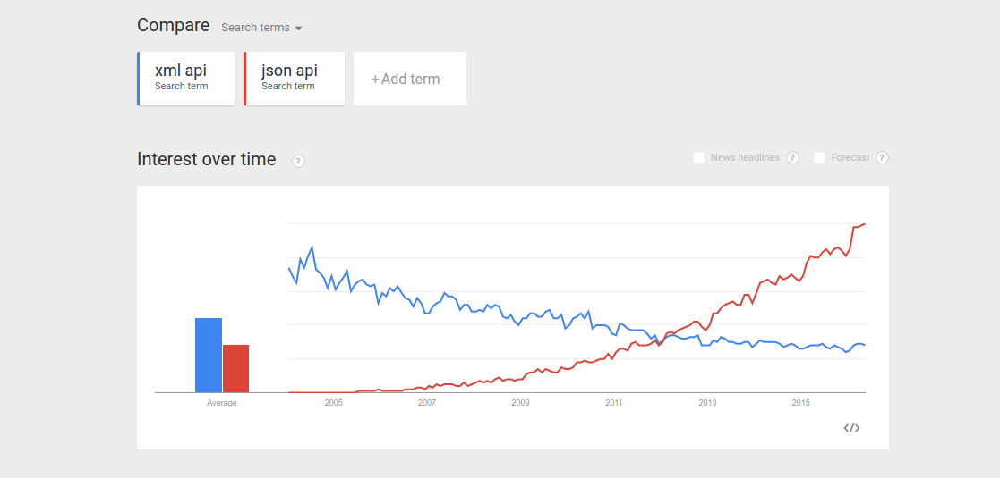

Your mission, if you choose to accept it, is to build a REST API on top of your database. How closer can you get?
cleaner and a more standards compliant API than the one you'd write from scratch
quick to get started, all you need to do is create the database.
simplicity
easy to scale
"Civilization advances by extending the number of important operations which we can perform without thinking of them." Alfred North Whitehead.
"Postgres is the Emacs of databases." Craig Kerstiens https://speakerdeck.com/craigkerstiens/postgres-demystified-1

Always use ssl to serve rest apis, no exceptions!
APIs keep changing
Avoid hair splitting
Was done initially using schemas
Now offloaded to Nginx
https://www.compose.io/articles/row-level-security-with-postgresql-95/
http://blog.2ndquadrant.com/emulating-row-security-in-postgresql-9-4/
GET /
You can customize which columns are returned using the select parameter:
GET /people?select=age,height,weight
JSON drill-down
GET /stuff?json_col->a->>b=eq.2
PostGraphQL https://github.com/calebmer/postgraphql
Foobar
Things like
GET /people/students/1
are not allowed.
https://hub.docker.com/r/begriffs/postgrest/
CREATE TABLE genres ( id serial NOT NULL PRIMARY KEY, name character varying(255) NOT NULL, parent_id integer REFERENCES genres (id) );
SELECT * FROM mytable WHERE id > 500